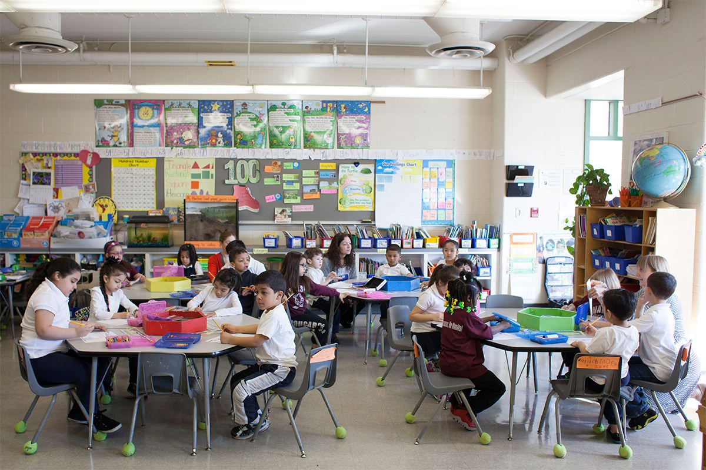

Carmen Liang
My name is Carmen Liang and I am currently a student at the University of California, Riverside studying in the field of Education Society, and Human Development. I am an educated and very dedicated young woman, putting endless amounts of effort in my work and projects. I am naturally very social and I am able to network and establish friendly relationships with my peers while still balancing a working environment. Additionally, I am very respectful and value trust greatly while still maintaining an optimistic and enthusiastic attitude.
The field of work that I am interested in making a career in has to do with education. I want to be an elementary school teacher and create a safe space for students to learn. Some students may come from a rough background at home and need a place to call home. I want to be able to offer support to these children and give them a sense of comfort, creating the classroom space into a second home. I think it is very important to support our future generation as they grow older in order for them to succeed in life. I want to be able to teach them lesson that they can use in and out of the classroom environment, leaving a positive lasting impact on their lives for them to be able to reflect on.
Another field of work I am looking to go into in the future is administration of schooling. I want to help these children that want to learn and offer them all the support or resources that I can offer. I want schools to be a safe place for students to get and education in an environment that is free of discrimination and unworthy distractions. My goal is to eliminate the school-to-prison pipeline and offer students the highest quality of education. School should be a place where students can express themselves, learn and indulge in academics, and grow as human beings. Please feel free to get in touch with me through any of the forms of contact listed below. I look forward to working with you!
Experience
Receptionist
• Answered phone calls
• Customer Service Reward of 2020
• Experience with Excel and website development
Barista
• Handled cash register and customer service
• Opened and closed the store, signed off shipments
Dance Team Captain
• Made teamwide decisions and assisted the coach
• Handled funds, paperwork, and organization of events
• Led everyday practices, warm ups, and stretches
• Led three different competition teams while maintaining 3.8 GPA.
Education
University of California, Riverside
Portfolio
